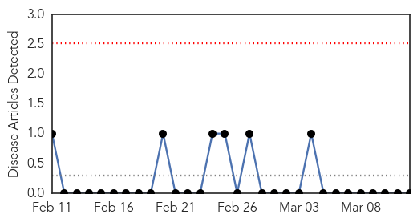
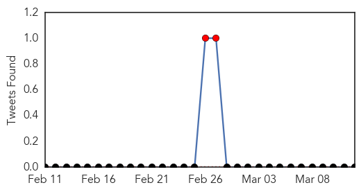
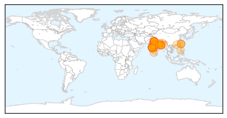
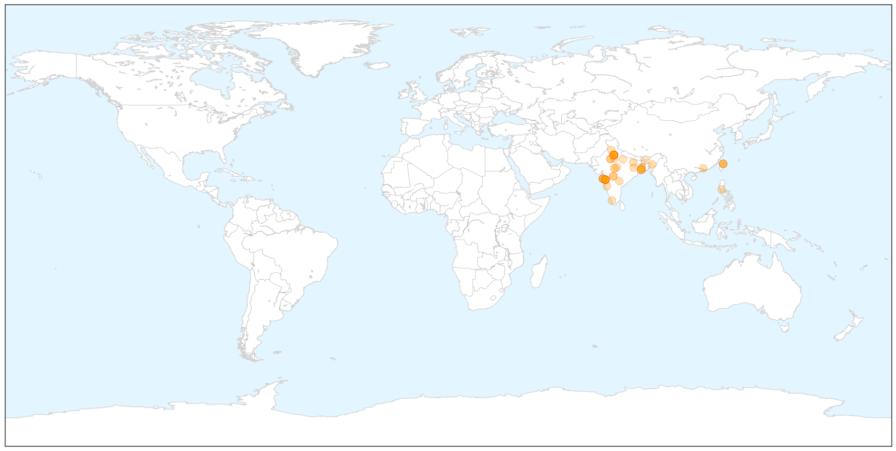

Bubonic Plague
30-Day Web Trend
0 alerts, 0 warnings

30-Day Twitter Trend
0 alerts, 0 warnings

Article Locations


Article Confidences

Top Articles:
-
No articles found for Mar 12, 2015
Top Tweets:
-
No tweets found for Mar 12, 2015
Swine Flu
30-Day Web Trend
12 alerts, 13 warnings

30-Day Twitter Trend
2 alerts, 0 warnings

Article Locations

X

Article Confidences

Top Articles:
- 1.000
- Dispur draws flak over apathy
- 0.999
- Study: India’s swine flu virus may have mutated into more dangerous strain
- 0.999
- Unanswered questions about Swine Flu in State Grey areas multiply anxiety, RIMS not officially informed
- 0.999
- It’s official: H1N1 toll 12 in State
- 0.998
- Weather hope in flu fight
- 0.998
- Youngster dies of swine flu, three deaths in Jan
- 0.998
- Manipur witnesses 1st swine flu casualty
- 0.997
- Swine flu claims 4 more lives in Rajasthan, toll reaches 358
- 0.997
- Swine flu-hit doctors back on job
- 0.996
- newkerala.com, India Regional News 24652
- 0.996
- Why Swine Flu Virus is Deadlier This Year
- 0.996
- Swine flu toll reaches 1,587, but sharp fall recorded in deaths from disease in March
- 0.995
- Swine flu deaths raise alarm
- 0.994
- India rejects US study, says no mutation in swine flu strain
- 0.994
- Telangana Registers 37 Fresh Swine Flu Cases
- 0.994
- District magistrate among 126 swine flu patients in Bihar
- 0.991
- Swine flu toll reaches 1587 but sharp fall recorded in deaths from disease in March
- 0.990
- Two Fatehgarh Sahib residents succumb to swine flu
- 0.990
- ASHA workers roped in to check swine flu cases in pregnant women
- 0.985
- Indian swine-flu virus reveals dangerous new mutation
- 0.985
- India is highly vulnerable to a range of animal-to-human infections
- 0.981
- Private hospital in East Delhi cheats H1N1 patient : India, News
- 0.978
- Mumbai: BMC hospitals aren't giving patients swine flu masks
- 0.975
- Health ministry, MIT duo at odds over swine flu
- 0.975
- Swine flu virus in India turns even more dangerous, MIT study warns
- 0.969
- Swine flu virus in India turns more dangerous: Study
- 0.967
- MP: Late referrals cause of high H1N1 deaths at MY Hospital
- 0.966
- Woman dies of swine flu infection, death toll in Mumbai touches 23
- 0.966
- NIV claims swine flu virus has not mutated, to submit report to Centre
- 0.966
- Another pregnant woman dies of H1N1
- 0.964
- Delhi nursing home cheats swine flu patient out of life-saving medicine
- 0.962
- Taiwan to donate 10,000 masks to Gujarat and Delhi
- 0.960
- Ruckus in House over swine flu deaths in Jharkhand
- 0.956
- No evidence to suggest swine flu virus has mutated: NIV
- 0.949
- Ruckus in House over swine flu deaths in Jharkhand
- 0.949
- MIT swine flu report to be studied: Indian experts
- 0.944
- Taiwan to donate 10,000 masks to Gujarat and Delhi
- 0.944
- Taiwan to donate 10,000 masks to Gujarat and Delhi
- 0.936
- MIT swine flu report to be studied: Indian experts
- 0.936
- ‘H1N1, KFD under control’
- 0.935
- Nepal Human Rights Four new swine flu cases detected in Chitwan
- 0.921
- India's killer swine flu turns more dangerous
- 0.920
- Mask price soars, govt steps in
- 0.911
- H7N9 Bird Flu Is Mutating, Sparks Pandemic Concerns
- 0.901
- Taiwan to donate 10,000 masks to Gujarat and Delhi
- 0.894
- Intra-nasal vaccines now available in Pune
- 0.880
- Swine Flu claims 3 lives in JKD
- 0.869
- Five treated for H1N1 discharged from hospital
- 0.868
- Suspected swine flu patient dies in IDH
- 0.864
- India H1N1 MIT study: Health ministry refutes mutation findings
Showing top 50 articles...
Top Tweets:
-
No tweets found for Mar 12, 2015